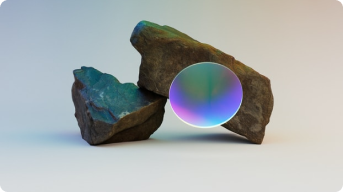
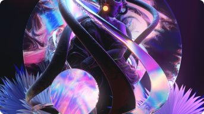

Insights Center
Stay inspired.
Highlights
-
UI בניחוח אירופאי
אמן דיגיטל מתרחבת ומציעה מעטפת סטודיו עם מעצבים מחו”ל כחלק מההתרחבות של אמן דיגיטל בחו”ל, פתחה אמן דיגיטל שלוחה של הסטודיו בפורטוגל, ומציעה ללקוחותיה מעטפת שירותי סטודיו מלאים, החל משירותי
-
מתערבים שתשחקו – איך ליצור חוויית לקוח ממכרת
האם שוטטות יכולה להשתלב בכל מרחב וירטואלי? ומה קרה כשלקוח ביקש שנייצר למשתמשים חוויית שוטטות באפליקציה בתחום הבנקאות? אם נכנסתם לדיזינגוף סנטר פעם, אין לי ספק נחשפתם לחוויית השוטטות
-
מתערבים שתשחקו – איך ליצור חוויית לקוח ממכרת
הכל משחק. החיים שלנו מלידה עד מוות, התקשורת בינינו, העבודה שלנו – וצריך לשאוף לשחק, להיות בתנועה, לקחת חלק בעולם הזה. יש הרבה מאד משחקים לשחק
-
מתערבים שתשחקו – איך ליצור חוויית לקוח ממכרת
CHEN Siman-tov 28.12.2021חווייה פרסונלית, הגברת שימוש וסבלנות הם בין היתרונות הרבים של גיימיפיקציה – שימוש ושיבוץ מנגנונים ממשחקי מחשב כחלק ממסע הלקוח. אנחנו ממליצים להציע ללקוחות הקצה ערך משחקי משמעותי ועמוק בכל המוצרים שאנחנו עובדים עליהם.
-
UI בניחוח אירופאי
CHEN Siman-tov 28.12.2021כחלק מההתרחבות של אמן דיגיטל בחו”ל, פתחה אמן דיגיטל שלוחה של הסטודיו בפורטוגל, ומציעה ללקוחותיה מעטפת שירותי סטודיו מלאים, החל משירותי -UX UI ועד ליצירת DSM לארגונים. כל אלו, בעזרת ארט דירקטורים, מעצבים בכירים ואנשי פיגמה מאסטרס מפורטוגל, ובעלויות נגישות.
-

האם שוטטות מציעה חוויית משתמש טובה יותר במוצרים דיגיטליים?
CHEN Siman-tov 28.12.2021האם שוטטות יכולה להשתלב בכל מרחב וירטואלי?
-
מתערבים שתשחקו – איך ליצור חוויית לקוח ממכרת
CHEN Siman-tov 28.12.2021חווייה פרסונלית, הגברת שימוש וסבלנות הם בין היתרונות הרבים של גיימיפיקציה – שימוש ושיבוץ מנגנונים ממשחקי מחשב כחלק ממסע הלקוח. אנחנו ממליצים להציע ללקוחות הקצה ערך משחקי משמעותי ועמוק בכל המוצרים שאנחנו עובדים עליהם.
-

סליחה על השאלה… במה את עובדת?
CHEN Siman-tov 28.12.2021כולכם מכירים את הסצנה הזאת. אירוע משפחתי, כזה עם משפחה רחוקה שאתם לא ממש בקשר איתה, אבל תמיד מברכים בנשיקה מכל צד ושיחה קצרה מנימוס. איך בעלך? ואיך אמא? שמעתי שאימצתם כלבה! איזה יופי…
- 1
- 2
- ...
- 24